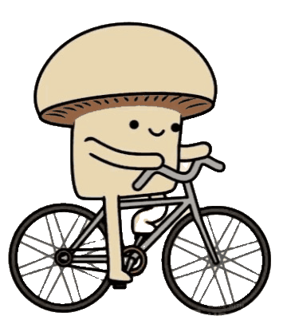
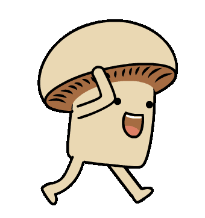
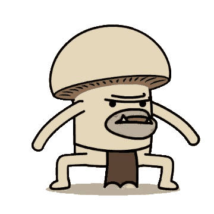
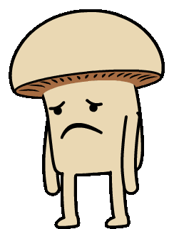
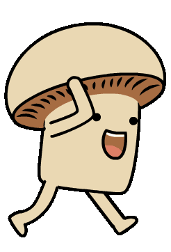
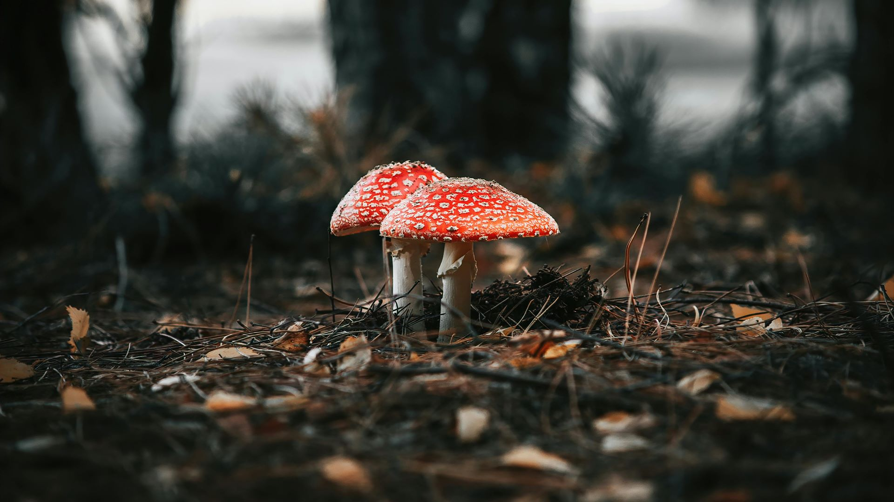
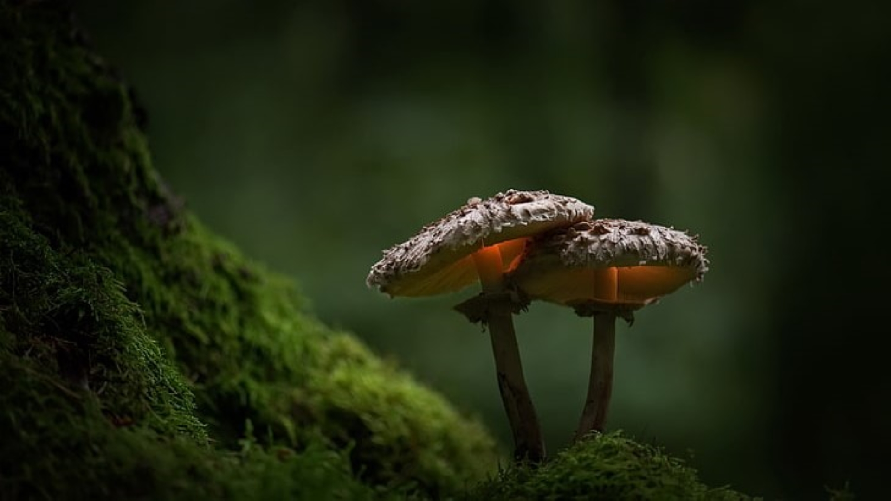
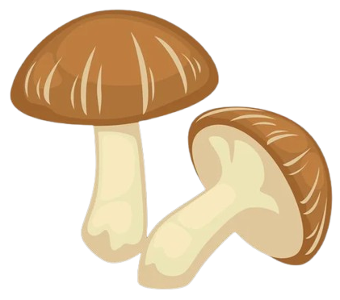
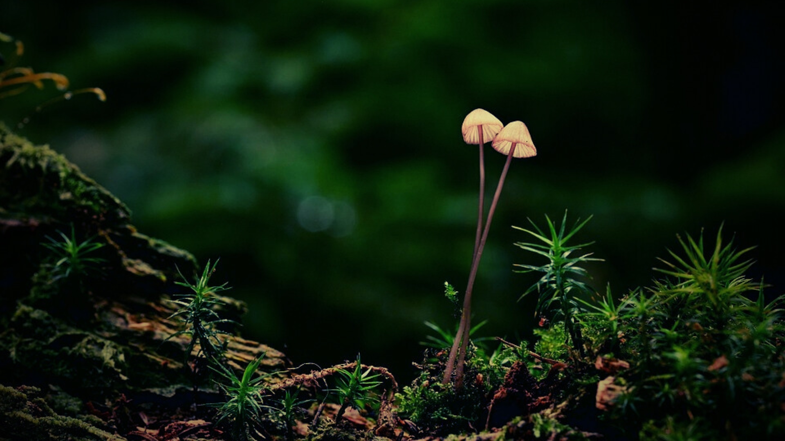
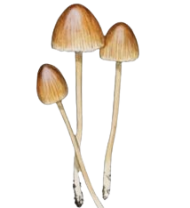

Toksisitas / Estetika / Signifikansi Budaya
/ Ekologi / Penelitian / Bahaya
TooadStool
Amanita muscaria
Jamur ikonik dengan warna merah cerah dan bercak
putih yang sering menjadi simbol dongeng dan
cerita rakyat. Namun, di balik keindahannya,
jamur ini menyimpan sisi gelap berupa toksisitas
yang dapat berbahaya bagi manusia dan hewan.
Lihat lebih lanjut »


Nutrisi / Estetika / Signifikansi Budaya /
Ekologi / Penelitian / Keamanan
TooadStool
Lentinula edodes
Jamur yang paling populer di dunia karena nilai
kuliner, nutrisi, dan signifikansi budayanya.
Selain sebagai bahan utama dalam berbagai
masakan, shiitake juga memiliki peran penting
dalam ekologi sebagai pengurai alami.
Lihat lebih lanjut »


Toksisitas / Estetika / Signifikansi Budaya
/ Ekologi / Penelitian / Potensi Bahaya
TooadStool
Mycena epipterygia
Jamur kecil dengan penampilan elegan yang sering
ditemukan di hutan basah. Dengan batangnya yang
berwarna kuning dan topi transparan, jamur ini
memberikan nuansa magis di antara dedaunan
hutan.
Lihat lebih lanjut »